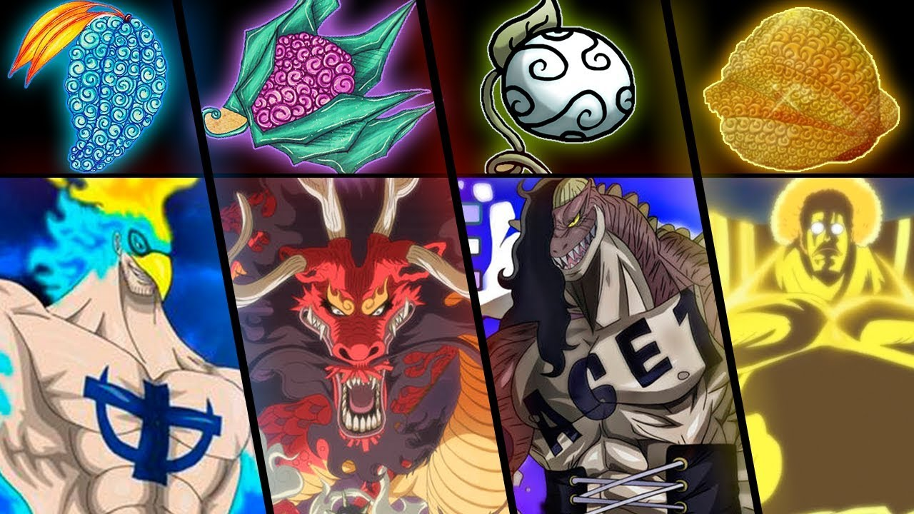

O que são Akumas no Mi?
No universo de "One Piece", as Akuma no Mi, também conhecidas como Frutas do Diabo, são um tipo especial de fruta encontrada no mundo. Essas frutas têm a capacidade de conceder poderes extraordinários àqueles que as consomem, transformando-os em seres especiais com habilidades únicas. Porém, essa concessão de poder vem com um preço: aqueles que comem as Akuma no Mi perdem a capacidade de nadar, tornando-se vulneráveis aos oceanos vastos que dominam o mundo de "One Piece".
No mundo de "One Piece", existem 3 tipos de Akumas no Mi:
Paramécias
As frutas Paramecia são um dos tipos de Akuma no Mi encontrados no universo de "One Piece". Elas concedem poderes especiais e habilidades extraordinárias aos seus consumidores. As frutas Paramecia não se enquadram nas categorias de Zoan (que permitem transformações em animais) ou Logia (que concedem controle sobre elementos naturais). Em vez disso, elas oferecem poderes variados, como a capacidade de esticar o corpo como borracha, controlar e transformar objetos, manipular a gravidade, criar substâncias e muito mais. Cada fruta Paramecia confere habilidades únicas ao seu usuário, tornando-os formidáveis em combate e oferecendo uma infinidade de possibilidades estratégicas. Porém, os consumidores dessas frutas perdem a capacidade de nadar, tornando-se vulneráveis aos oceanos vastos do mundo de "One Piece".
Zoans

As frutas Zoan são outro tipo de Akuma no Mi presentes no mundo de "One Piece". Diferente das frutas Paramecia, as Zoan concedem aos consumidores a habilidade de se transformar em animais ou em uma forma híbrida entre animal e humano. Existem três categorias principais de Zoan: Zoan Comum, Zoan Antiga e Zoan Mítica. As Zoan Comum permitem a transformação em um único animal, como uma onça ou uma águia. As Zoan Antiga permitem a transformação em espécies extintas, como dinossauros. Já as Zoan Mítica são as mais raras e permitem a transformação em animais lendários, como dragões. Os usuários de Zoan possuem habilidades físicas aprimoradas na forma animal, o que lhes confere força, velocidade e resistência aumentadas. Essa capacidade de se transformar em diferentes formas animais confere vantagens estratégicas em batalha, além de outras habilidades específicas associadas à espécie animal. No entanto, assim como com as outras Akuma no Mi, os consumidores das frutas Zoan perdem a habilidade de nadar, tornando-se vulneráveis à água.
Logias
As frutas Logia são um tipo especial de Akuma no Mi no mundo de "One Piece". Ao contrário das frutas Paramecia e Zoan, as Logia concedem aos seus usuários a capacidade de se transformar, controlar e produzir um elemento natural específico. Isso inclui elementos como fogo, gelo, eletricidade, areia e muitos outros. Os usuários de Logia podem desintegrar seus corpos em seu elemento designado, tornando-se praticamente intangíveis e imunes a ataques físicos. Além disso, eles podem reformar seus corpos a partir do elemento, o que lhes confere uma regeneração notável. Essas habilidades tornam os usuários de Logia extremamente poderosos e difíceis de derrotar em batalha. Eles podem controlar, manipular e até mesmo criar seu elemento, usando-o para atacar, defender e se mover com extrema habilidade. No entanto, assim como com outras Akuma no Mi, os usuários de Logia são vulneráveis à água, que anula sua capacidade de se transformar e controlar o elemento, tornando-os mais suscetíveis a danos.
Agradecimentos